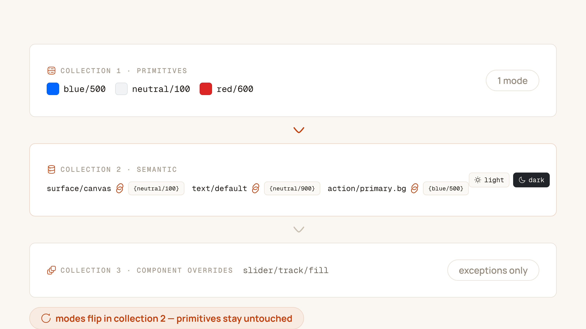
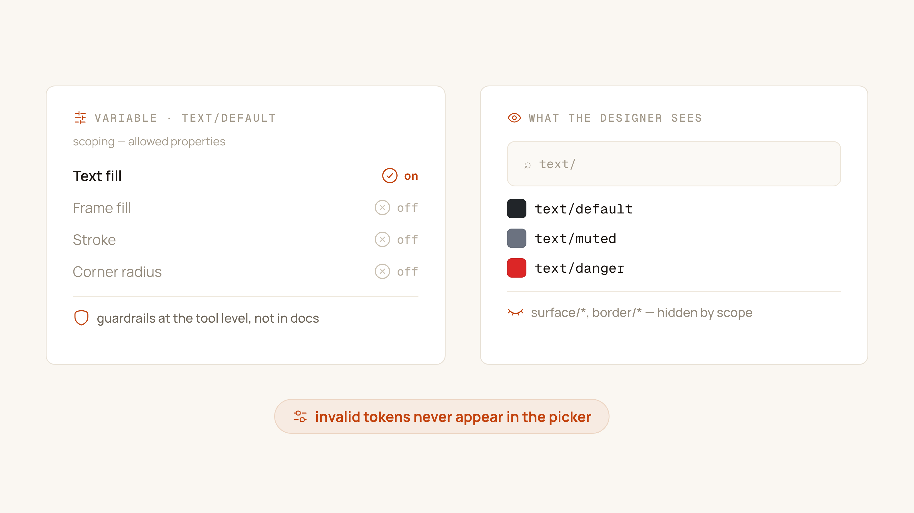
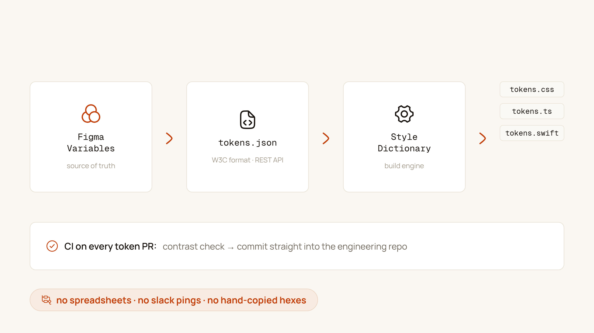

Every Figma variables rollout I've audited started the same way: one giant collection called "Colors," four hundred variables, Light and Dark modes bolted on later, and a design team that has quietly gone back to eyedroppering hex codes because finding the right variable takes longer than typing it. The feature isn't the problem. Figma variables become production infrastructure only when you make four architectural decisions up front — and most teams make none of them.
1. The 3-collection architecture
Don't put everything in one collection. Split variables by their job in the system, and the mode logic becomes almost free:
- Primitives — single mode, raw values.
blue/500: #0066FF,neutral/900: #212529. This collection doesn't know dark mode exists. It's a dictionary, not a theme. - Semantic — multi-mode, aliases only.
surface/canvas,text/default,action/primaryexist here as Light and Dark columns, each cell pointing at a primitive. All mode switching lives in this collection and nowhere else. - Component — sparse overrides for genuinely unique sub-elements:
slider/track/fill,tooltip/notch. Aliases into Semantic. If this collection grows past a few dozen entries, you're recreating the megacomponent problem in token form.
Because modes resolve at the collection level, a frame set to "Dark" re-points every semantic alias automatically — while primitives stay untouched. That's the entire trick: change the pointer, never the component.

2. Scope every variable — ruthlessly
Figma's variable scoping is the most skipped and most valuable setting in the whole feature. Scoping declares where a variable is allowed to appear:
surface/*→ Frame and Shape fills onlytext/*→ Text fills onlyborder/*→ Strokes onlyradius/*→ Corner radius fields only
The payoff is a picker that can't lie to you. A designer coloring a heading sees only the text/* family — no surface colors, no brand ramps, no primitives. In the libraries I've rebuilt this way, picker noise drops by roughly 75%, and the "wrong token" class of design-review comments mostly disappears. Scoping is linting, built into the tool.

3. Keep primitives private
Consumers of your library should never see blue/500. The moment a designer applies a primitive directly to a frame, dark mode breaks on that frame — permanently, and silently. The convention that prevents it: prefix internal collections with an underscore — _primitives/blue/500 — and hide them from publishing.
What ships to consumers is the Semantic layer only: a small, intentional API of tokens with names that describe intent. Primitives become what they should be — private implementation details the system team can retune (a new blue ramp, a perceptual contrast pass) without anyone's file noticing.
A design system's public API is its semantic tokens. Everything else is a private implementation detail — treat it that way, or pay for it later.
4. The Figma-to-code contract
Variables that live only inside Figma are documentation, not infrastructure. The contract with engineering is a pipeline, and every stage is automatable:
Figma Variables
│ (REST API / Token Studio export)
▼
design-tokens.tokens.json ← W3C format, committed to git
│ (Style Dictionary build)
▼
dist/tokens.css · tokens.ts · tokens.swift
│ (CI: contrast tests, then PR into the app repos)
▼
productionThe mechanics: a GitHub Action pulls variables via the Figma REST API (or a Token Studio sync), writes them as W3C-format design-tokens.tokens.json, and runs Style Dictionary to compile platform outputs — CSS custom properties for web, TypeScript constants for the app, Swift for iOS. Contrast tests run in the same action, so a token pair that fails WCAG blocks the sync PR before it reaches the engineering repo. One command, one source of truth, zero hand-transcribed hex codes.

The order matters
These decisions compound. Collections define where modes live; scoping makes the semantic layer self-enforcing; private primitives protect it from bypass; the pipeline makes it real in code. Skip one, and the others degrade — an unscoped semantic layer leaks, an exported primitive sprawl can't be versioned, a beautiful collection structure that never reaches the codebase is a style guide with extra steps. Get all four right, and "Figma variables" stops being a feature demo and becomes what it should be: the single source of truth for every color, space, and radius your product ships.